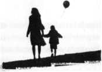

Bobby bir akşam yemeği molası vermek istediyse de D.D. oralı olmamıştı.
"Kendine daha iyi bakmalısın," dedi Bobby.
D.D. ise Boston sokaklarında ilerlerken, "Sen de üzerime titremeyi kesersen hiç fena olmaz!" diye çıkıştı. "Bu durumu önceden de sevmezdim, şimdi de sevmiyorum."
"Hayır."
"Anlamadım? "
"Hayır dedim. Bunu yapamam."
D.D. oturduğu yolcu koltuğunda dönerek Bobby'ye dikkatle dikti gözlerini. "Hamile kadınlarınhormonal dengelerinin bozuk olduğunu ve bir anda gözlerinin dönebileceğini bilsen iyi edersin. Yani, seni şimdi şuracıkta öldürsem,jüride yer alan bir anne sayesinde bu durumdan yırtabilirim."
Bobby gülümsedi. "Annabelle de aym şeyi söylüyordu!"
"Ah, Tanrı aşkına... "
Bobby yeniden lafa karışıp, "Sen hamilesin," diyerek D.D.'nin lafinı böldü. "Ve erkekler hamile kadınlann üzerine titrerler. Bu sayede uğraşacak bir şeylerimiz olur. Aym zamanda, bunu gizli gizli de yapsak bebeklerin üzerine titremeyi de çok severiz. Emin ol bebeğini ekibinle tanıştırmaya getirdiğin ilk gün... iddiaya girerim ki Phil bir çift patik örüp getirmiş olacak. Ne i 1... kanımca Looney Tunes yara bantları ve bebeğinin ilk bisiklet kaskını alacak."
D.D., Bobby'ye boş gözlerle baktı. Ne bebeğine patik almayı ne yara bantlanmn lazım olacağını ne de bebeğini iş yerine getirmeyi düşünmüştü. Halen bebeği hazmetmeye çalışırken bebekli hayatın nasıl olacağına dair hiç kafa yormuyordu.
Alex'ten bir mesaj almıştı : Tutuklamayı duydum, geri kalan kısım nasıl gidiyor?
D.D. mesaja cevap vermemişti. Ne diyeceğini bilemiyordu. Evet, belki Tessa'yı hapse attırmayı başarmışlardı ama henüz alü yaşındaki Sophie'nin izine ulaşamamışlardı. Güneş ikinci kez yerini karanlığa bırakmış, ilk kayıp ilanının üzerinden tam otuz altı saat geçmişti. Ne var ki Sophie muhtemelen iki gündür kayıptı. D.D. artık kayıp ilanının bir önemi olmadığını düşünüyordu. Çünkü Tessa Leoni'nin kendi kızı Sophie de dahil olmak üzere tüm ailesini katlettiğine inanıyordu.
D.D. bir kayıp dosyası üzerinde değil, işin içinde birde çocuk cesedinin olduğu bir cinayet dosyası üzerinde çalışıyordu.
D.D. henüz Alex'e açılmaya hazır değildi. Alex'in nazik ama bir o kadar da üsteleyici sorularım duymaya hali yoktu. Ya da konuyu oradan alıp da nasıl Ah, bu arada ben hamileyim. Ki senin bundan henüz haberin yok. Ama Bobby her şeyden haberdar, kadın cinayet zanlısı sağ olsun, kısmına getirecekti?
İşte bu gibi durumlar D.D.'yi tam bir işkolik haline getiriyordu. Çünkü Sophie'yi bulmak ve de Tessa'ya hak ettiği cezayı verdirmek kendini daha iyi hissetmesine sebep olacaktı. Bu yüzden Alex'e yeni dünya düzeninden bahsetmek tavşan deliğinden daha da derinlere düşmekten başka bir işe yaramayacaktı.
Bobby, "Tek ihtiyacın nohut köftesi," dedi.
"Süper fikirl" diye yanıtladı D.D.
"Annabelle hamileyken çok severdi onları. Et yiyemi-yorsun değil mi? Kokusuna bile dayanamıyorsun?"
D.D. başım evet anlamında salladı. "Yumurta da aynı şekilde."
"O halde en iyisi çeşitli ve bol sayıdaki sebzeleriyle Akdeniz mutfağı."
D.D. şüpheyle, "Peki, sen nohut köftesi sever misin?" diye sordu.
"Hayır. Ben aslında hamburgerdyim ama şu an onun sana iyi geleceğini hiç sanmıyorum..."
D.D. başım iki yana salladı.
"O halde nohut köftesi yiyoruz."
Bobby'nin bildiği bir yer vardı. Muhtemelen Anna-belle'in de en sevdiği yerlerden biriydi. D.D. mutfağın ağır kokusundan kaçıp, sesli mesajlarını dinlemek üzere arabada beklerken Bobby sipariş vermek için içeri girmişti. D.D. işe ilk olarak Phil'in telefonuna dönerek başladı. Ondan, Brian Darby'nin tüm hesaplarını yeniden incelemesini, başka hesaplan olup olmadığını, yapılan işlemleri, soyadıyla ya da sahte isimlerle hesap açtırıp açtırmadığını kontrol etmesini istemişti. Eğer Brian'ın kumar alışkanlığı varsa bu banka hesaplarından kolaylıkla takip edilebilirdi. O durumda hesaba büyük miktarlarda para girişi ya da çıkışı olurdu. Ya da belki de ATM'den çekilmiş nakit paranın Foxwoods, Mohegan Sun ya da diğer kumarhanelere girip girmediği incelenebi-lirdi.
D.D.'nin bir sonraki telefonu halen hastane kayıtları üzerinde çalışan Neil oldu. Neil, Tessa'mn geçmiş tıbbi ka-yıtlannı inceliyordu. D. D. şimdi de Brian'ın tıbbi kayıtlannı istiyordu. Brian'ın son on iki aydır kayak yaparken diz kapağı kırığı ya da merdivenden yuvarlanma gibi kazalar geçirip geçirmediğine göz atmasını istiyordu. Bu konu Neil'ın da ilgisini çekmişti ve hemen araştırmaya başlayacağım söylemişti.
Sophie için oluşturulan acil çağrı hattına Sophie'den çok, beyaz Denali hakkında ihbarlar yapılıyordu. Demek ki bu araçtan şehirde oldukça fada sayıda vardı, bu durumda her ihbarın değerlendirilebilm esi için sahaya daha fazla personel sürmek lazımdı. D.D. ihbar hattı ekibinden gelen her ihbarı, kamyonetin izini süren üç kişilik ekibe aktarmasını istiyordu. D.D. üç kişilik ekipten de yedi gün, yirmi dört saat çalışmalarını, gelen her ihbar telefonunu ciddiye almalarım ve eğer daha fazla desteğe ihtiyaç duyarlarsa, yanlarına birkaç memur daha almalarını söylemişti.
Brian Darby'nin arabasının son kez ne zaman görüldüğünü tespit etmek ekibin önceliklerindendi, çünkü ancak o sayede Denali'nin nereye gittiğini ve Sophie'nin cesedini bulabilirlerdi.
Bunu düşünmek bile D.D.'nin canını sıkmıştı. Aramalarına son verip bakışlarını pencereden dışarı çevirdi.
Dondurucu bir geceydi. Kaldırımda yürüyen yayalar ka-banlarının yakalarını kulaklarına kadar kaldırmışlar, eldivenli ellerini kabanlarının ceplerine sokmuşlardı. Henüz kar yoktu ama gelmesi yakındı. D.D.'nin ruh haliyle uyumlu bir şekilde kuru ayaz bir geceydi.
D.D., Tessa Leoni'yi tutukladığı için çok mutlu değildi ama aslında olmak isterdi. Kadın polis kafasını fena karıştırmıştı. Hem çok genç, hem çok kendi halinde... hem çok güzel, hem de çok savunmasızdı. D.D.'nin hiç sevmediği kombinasyonlardı bunlar.
Tessa onlara alenen yalan söylüyordu. Kocası, kızı ve eğer Hamilton haklıysa, polis sendikasından çalınan iki yüz elli bin dolarla ilgili olarak gerçekleri saklıyordu. Parayı o mu çalmıştı? Bu da "yeni hayat"ının bir parçası mıydı? Çeyrek milyon doları yürüt, aileni ortadan kaldır ve gününü genç, güzel ve zengin olarak bitir, plan bu muydu?
Yoksa bu da mı kocası yüzündendi? Yoksa Brian dürüst yollardan ödey em eyeceği yüklü bir kumar borcunun altına mı girmişti? Belki de Tessa'dan sendikanın paralarım zimmetine geçirm esini o istem iş ve Tessa da onun akima uymak zorunda kalmıştı. Ne de olsa iyi bir eş olarak kocasının arkasında durmalıydı. Belki de sonradan, nasıl bir pisliğe bulaştığının farkına varıp bunun keyfini tek başına sürmeye karar vermiş ve yalnız bir hayatın hayallerini kurmaya başlamıştı... Kendini riske ederek aldığı bu haksız kazancı ne diye kendi elleriyle başkasına versindi ki?
Bunun için çok da akıllıca bir plan yapmıştı. Kocasım bir çocuk katili ve kansını döven bir şiddet manyağı gibi gösterip onu nefsi müdafaa adı altında, öldürecekti. Her şey unutulmaya yüz tutup ortalık sakinleştiğinde Tessa teşkilattan ayrılıp, başka bir eyalete taşınacak ve kocasının ölümü nedeniyle sigortadan aldığı iki yüz elli bin dolann keyfini sürmeye başlayacaktı.
D.D. planın işe yarayabileceğini düşünüyordu. Ta ki adli tabip Brian'ın dokularında donmaya bağlı bir bozulma olduğunu fark edene kadar...
Belki de bu yüzden Tessa, Ben'e otopsi yapm am ası için baskı yapıyordu. Eğer mümkünse otopsiyi yaptırmamaya, değilse de aceleye getirmekti niyeti. Bu sayede Ben, işini çabucak yapıp fazla ayrmtıcı olmayacak, tüm bunlar da ortaya çıkmayacaktı.
Bravo Ben, diye düşündü D.D. ve o an ne kadar da bitkin olduğunu faik etti. Bugün hiçbir şey yememiş, dün gece doğru dürüst uyumamıştı. Bedeni artık iflasın eşiğindeydi.
Uyumaya ihtiyacı vardı ve de Alex'i aramaya.
Tanrım, Alex'e ne diyecekti?
Kapının birden açılmasıyla birlikte Bobby arabaya bindi. Elinde içinden çeşit çeşit kokular gelen kahverengi bir kesekâğıdı tutuyordu. D.D. kokuyu içine çekti ve ilk kez midesinin bir kokuya b aşk aldırmadığı m fark etti. Bu kez daha derin bir nefes aldı, birdenbire nasıl da açlıktan ölmek üzere olduğunu fark etti.
"Nohut köftesi!" diye bağırdı.
Bobby, D.D.'nin eline hafifçe vurup, elini kese kâğıdının içine daldırdı. "Şimdi söyle bakalım, hâlâ erkeklerin ka-dınlann üzerine titrememesi gerektiğini düşünüyo...”
"Bana ver, bana ver, bana ver!"
"Ben de seni çok seviyorum D.D. Ben de seni çok seviyorum."
Bobby ve D.D. yemeklerini yediler. Yemek güzeldi. Yemek enerji demekti. Yemek kuvvet demekti.
İşleri bittiğinde D.D. çekingen bir şekilde önce ağzım, sonra ellerini sildi ve gözlerini içi boşalmış kesekâğıdına dikti.
"Bir planım var," dedi.
"Planında eşime ve çocuğuma gitme ihtimalim var mı?” diye sordu Bobby.
"Hayır. Planımda Memur Lyons'ın evine gidip, onu eşinin ve çocuklarının önünde soıgulamak var."
"Ben varım."
D.D. de Bobby'nin eline hafifçe vurdu. "Ben de seni seviyorum, Bobby. Ben de seni seviyorum."
Lyons, Brian Darby'nin evinin yedi ev aşağısında 1950'lerden kalma mütevazi bir evde yaşıyordu. Caddeden bakıldığında ev eski ama bakımlı görünüyordu. Evin önündeki küçük bahçede birkaç plastik kar küreyici ve kızak duruyordu. Araba yolunun etrafında bozulmuş bir kardan adam ve bir kar kalesi kalıntıları vardı. Lyons aracım bu iki şeklin yanına dikkatle park etmişti.
Bobby aracını koymak için caddeyi birkaç kez dolanmak zorunda kaldıysa da bir park yeri bulamamış ve kuralları hiçe sayarak Lyons'ın devriye aracı m n arkasına park etmişti. Eğer zaman zaman kuralları ihlal edemeyecekse, polis olmanın ne anlamı vardı ki?
D.D. ve Bobby arabadan inerlerken Memur Lyons on-lan çoktan evinin ön verandasında bekliyordu. Lyons iriyan bedenine, bir kot pantolon ve pamuklu bir gömlek geçirmiş, yüzüne hiç de misafirperver olmayan bir ifade takınmıştı.
Selam ifadesi olarak, "Ne oldu?"yu seçmişti.
D.D., "Sana sormamız gereken birkaç soru var," dedi.
"Herhalde evimde sormayacaksınız, öyle değil mi?"
D.D. biraz geri durup, konuşmayı Bobby'ye bıraktı. Ne de olsa o Lyons'ın mesai arkadaşı sayılırdı. İyi polisi oynamadaki başansı da ayn bir konuydu.
Bobby gönül alır gibi bir ifadeyle, "Amacımız rahatsız etmek değil," dedi. "Darby'nin evindeydik," diye yalan söyledi. "Aklımıza birkaç sora takıldı. Sen de hazır buralarda oturuy orken..."
Lyons'ın al yanaklı suratı hiçbir gevşeme belirtisi göstermediği gibi düşmanca bir ifadeden de uzak duruyordu. "Eve iş getirmem," dedi. "Benim üç çocuğum var, onlar Sop-hie olay mı duymak zorunda değiller. Zaten bu konudan yeterince ürkmüş dürümdalar."
D.D., "Sophie'nin kayıp olduğunu biliyorlar o halde," dedi. Lyons bakışlarım D.D.'ye çevirdi.
"Anneleri onları okula bırakırken arabada duymuşlar. Acil kayıp ilanından." Lyons kalıplı omuzlarını silkti. "Bunun önüne geçemezdim. Demek istediğim tam da bu. Sophie olayını biliyorlar ama tam olarak başına ne geldiğinden haberdar değiller." Sesi biraz daha sertleşmişti. "Halen bir süper kahraman zannettikleri babalarının Sophie'yi neden bulamadığını anlamıyorlar."
Bobby, "O halde hepimiz aynı amaca hizmet ediyoruz," dedi. Bunu söylerken bir yandan da D.D. ile birlikte verandaya çıkıyorlardı. "Biz de Sophie'yi bir an önce bulmak ve onu evine getirmek istiyoruz."
Lyons'ın omuzlan bir anda düştü. Bss etmişti. Bir dakika sonra, kapıyı açıp D.D. ve Bobby'ye içeri girmelerini işaret etti.
Eve ilk girdiklerinde onlan karşılayan ahşap duvar panelleri ve yerde üzerindeki çamur izleri ve seramik kaplama-lanyla bir vestiyer odası oldu. Küçük bir evdi ve D.D. bir dakikada evde kimin borusunun öttüğünü anlamıştı. Yaşları beş ile dokuz arasmda değişen üç erkek çocuğu hararetli bir şekilde konuşarak yeni gelen misafirlerini karşılamak üzere merdivenleri paldır küldür iniyorlardı. Hemen arkalarında da omuz hizasındaki kahverengi kıvırcık saçlarıyla, otuzlu yaşlarında gibi görünen bitkin ama güzel bir kadın vardı.
Kadm çocuklarma, "Yatma zamanı!" diye seslendi. "Herkes odasına. Dişlerinizi fırçalayıp pijamalarınızı giyene kadar sizi ortalıklarda görmek istemiyorum."
Üç erkek çocuğu ise kıllarım kıpırdatmadan annelerine bakıyordu.
En büyük çocuğun aniden, "En son gelen çürük elma!" diye bağınp fırlamasıyla, hep birlikte bağnşarak ve birbirlerini ezerek yukarı kata koşturdular.
Anneleri derin bir iç geçirmişti.
Shane ise başını iki yana sallamıştı.
Shane karısını göstererek, "Bu benim karım, Tina," dedi. Tina nazikçe gülümseyerek konuklarının ellerini sıktı. Ama D.D. kadının dudak kıvrımlanndan ve kocasına atüğı bakıştan gerginliğini okuyabiliyordu.
Kelime boğazında bir an düğümlenip kalırken, "Sophie' yle mi ilgili?" diye fısıldadı.
Shane yumuşacık bir tonla, "Henüz haber yok," dedive elini D.D.'ye gerçekten bir şefkat gösterisi gibi gelen bir biçimde karışırım omzunun üzerine koydu. "Benim biraz işim var tamam mı? Biliyorum çocukları yatıracağıma söz vermiştim ama..."
Tinahiç düşünmeden, "Sonm değil," dedi.
" Ön odada olacağız."
Tina yeniden başını "tamam" anlamında salladı. D.D., Shane'i takip ediyor, girişten mutfağa geçerlerken kadının gözlerinin halen üzerlerinde olduğunu hissedebiliyordu. Kadının üzerinde garip bir tedirginlik var gibiydi.
Mutfağın hemen dışında küçük bir ön oda vardı. Oda sanki daha önceden üç mevsimde de kullanılan küçük bir balkonmuş da sonradan Shane tarafından pencerelerle kapatılıp bir de gazlı soba konularak odaya dönüştürülmüş gibiydi. Tipik bir erkek odasıydı. Büyük ekran bir televizyon, iki devasa tele v izy on koltuğu v e bolca spor obj eleri... D.D., Memur Lyons 'ın tüm günün stresini atabileceği bir erkek sığınağı, diye düşündü.
D.D. acaba karısının da benzer bir hobi ya da masaj odası olup olmadığım düşünmeden edemedi. Çünkü o kadın da tüm gününü her gün devriyeye çıkan kocasımn yokluğunda üç çocukla boğuşarak geçiriyordu.
Oda, köşelerdeki armut koltuklar hesaba katılmazsa üçüne de oturacak yer imkânı sağlamıyordu. Bu nedenle de ayakta durmayı tercih ettiler.
Bobby yeniden iyi polisi oynamaya başlayarak, "Güzel ev," dedi.
Lyons omuzlarım silkti. "Bu evi yeri güzel olduğu için aldık. Şu anda göremiyorsunuz ama arka bahçe, parka bakıyor. Bu sayede de önümüzde oldukça büyük bir yeşil alan oluyor. Barbekü partileri için harika bir ortam. Üç oğlumuz için de öyle."
D.D., "Bu doğru," diyerek lafa başladı. "Bahçede verdiğiniz yemeklerle ünlüsünüz. Tessa ve Brian da öyle tanışmışlardı, değil mi?"
Ly ons tek kelim e etmeden başını "evet" anlammda salladı. Kollarım göğsünün önünde birbirine bağlamıştı. D.D. bu bir savunma duruşu olmalı diye düşündü. Ya da omuz ve göğüs kaslarının ortaya çıkışına bakılırsa, asabiyet duruşu da olabilirdi.
Bobby, "Yarbay HamiltonTa görüştük," dedi.
D.D.'ye mi öyle geliyordu yoksa Lyons biraz gerilmiş miydi?
"Bize senin organize ettiğin pek çok aktiviteden bahsetti. Bilirsin, Red Sox maçım izlemek için dışarı çıkmalar, Foxwoods'a kumar oynamaya gitmeler."
Lyons başıyla onayladı.
" Sanıyorum ki bu gecelerde Brian Darby de size sık sık katılırmış."
"Buralarda olduğu sürece," dedi Lyons. Yine ne olumlu ne de olumsuz bir ifadeyle omuzlarım silkmişti.
"Bize biraz Foxwoods'tan bahseder misin?" diye sordu D.D.
Lyons, D.D.'ye uzun uzun bakıp sonra bakışlarını Bob-by'ye çevirdi. "Ne sormak istiyorsanız, doğrudan sorar mısınız?" dedi.
"Pekâlâ. Brian Darby'nin kumar sorunu var mıydı? Bu konuda bir bilgin var mı?"
"Bildiğim kadarıyla..." Memur Lyons birden derin bir iç geçirip kollarım çözdü ve iki yana açtı. "Kahretsin," dedi.
D.D. bunu evet olarak kabul etmişti.
"Ne kadar kötüydü?" diye sordu.
"Bilmiyorum. Bana hiçbir şey anlatmazdı. Onaylamadığımı biliyordu. Ama yaklaşık altı ay önce bir gün Tessa beni çağırdı. Brian gemideydi. Yukarıdaki banyonun su borularında sızıntı vardı. Ben de ona bir tesis at çının numarasını verdim, sonradan öğrendim ki arayıp çağırmış. Birkaç borunun ve duvar kâğıdının değişmesi gerekmiş. İş bittiğinde, sanıyorum ki sekiz yüz ya da dokuz yüz dolara mal olmuş. Ama Tessa parayı çekmek üzere bankaya gittiğinde hesapta hiç para olmadığım görmüş."
"Hesapta para yok muymuş?" diye sordu D.D.
Lyons omuzlannı silkti. "Tessa'nın dediğine göre hesapta otuz bin dolar olması gerekiyormuş ama yokmuş. O gün ödemesi gereken parayı ona ben borç vermiştim. Sonra, Brian seferden döndüğünde..."
"Ne oldu?"
"Onunla yüzleştik. İkimiz birden. Tessa benim de orada olmamı istemişti. Eğer sadece kendi olursa, Brian'mbu durumu sadece bir eşin dırdırı olarak alabileceğinden korkuyordu. Ama eğer eşi ve Brian'ın arkadaşı olarak ikimiz birden konuşursak işi daha ciddiye alacağını düşünüyordu."
Bobby, "Yani, Tessa ile birlikte kumar bağımlılığı 'telkini' yaptımz," diye bir çıkanmda bulundu. "İşe yaradı mı peki?"
Lyons birden kükremeye başladı. "İşe yaramak mı? Brian böyle bir bağımlılığı olduğunu kabul etmediği gibi, bir de Tessa ve beni gizli bir ilişki yaşam akla suçladı. Ona karşı işbirliği içinde olduğumuzu iddia ediyordu. İnanabiliyor musunuz?" Lyons başını iki yana salladı. " Yani... bir adam ı tanıdığınızı sanıyorsunuz. Uzun zamandır birbirinizi tanıyorsunuz. Sonra bir gün o kalkıp kendi kumar bağımlılığını kabul etmektense en iyi arkadaşının karısını becerdiğini iddia ediyor. Neden? Çünkü tüm yatırımını tefecilerin eline vermeyi kendine yediremiyor."
D.D. hızla, "Tefeciden para mı aldı?" diye sordu.
Lyons, D.D.'nin gözlerinin içine baktı. "Ona sorarsanız kumar borcu için almadı. Parayı Denali'nin borcunu kapatmak için aldığını söyledi. Ama biz orada otururken Tessa tüm soğukkanlılığıyla kalkıp bankayı aradı ve öğrendi ki araba için çektikleri kredide halen otuz dört bin dolar borçlan var. İşte o anda da Brian abuk sabuk konuşup Tessa ile yattığımızı söylemeye başladı. Şu işe bak."
"Tessa ne yaptı peki?"
"Adeta yalvardı. Her şeyi kaybetmeden önce yardım alması için dil döktü. Brian ise bunu hiç kabul etmedi. En sonunda Tessa, Brian'a öyle bir sorunu olmadığına göre bir daha kumar oynamayacağına dair söz vermesini söylemişti. Asla. Foxwoods'dan, Mohegan Sun'dan ya da benzer yerlerden artık uzak duracaktı. Brian ise Tessa beni görm eyece-ğine söz verirse bu sözünde duracağını söyledi."
D.D. tek kaşım kaldırarak Lyons'a şüpheyle baktı. "Gerçekten bir ilişki yaşadığınızı düşünmüş olmalı."
"Bağımlılar kendi suçlarını örtbas etmek için başka insanları suçlamaya bayılır," diyerek yanıtladı Lyons. "isterseniz karıma sorun. Durumu ona da anlattım. Brian'ın evde olduğu ya da olmadığı zamanlarda benim neler yaptığımı size o anlatabilir. Aramızda gizli saklı yoktur."
"Sahi mi? O halde neden bunu bize daha önceden anlatmadığını sorabilir miyim?" dedi D.D. "Daha yirmi dört saat öncesinde Tessa ve Brian'ın evlilikleri hakkında çok bilgisi olmadığını söyleyen sen değil miydin? Ne oldu da yirmi dört saat sonra birden çiftimizin kişisel telkin uzmanı oluverdin?"
Lyons baştan ayağa kıpkırmızı kesilmişti. Elleri her iki yanında birer yumruk olmuştu. D.D. gözlerini aşağı kaydırdığında...
"Seni adi herif!"
D.D., Lyons'm sağ elini kapıp, ışığa doğru kaldırdı. Ama birdenbire Lyons direnip sol eliyle karşı çıkarak D. D.'yi sırtından itmeye çalıştı. Onu durduran tam da şakağına dayanan dolu bir Sig Sauer oldu.
"Eğer onun kılma dokunursan beynini dağıtırım," dedi Bobby.
Her iki adam da nefes nefeseydi. D.D. ise tam ortalarında kalmıştı.
Lyons'ın Bobby'den neredeyse yirmi kilo fazlalılığı vardı. Bobby'den daha güçlü ve bir devriye polisi olarak Bobby'ye nazaran dövüş sanatlarında daha deneyimliydi. Lyons'm yerinde başka bir memur olsa, belki de kıpırdamaya cüret ederek hodri meydan derdi.
Ne var ki Bobby de hiç yabana atılacak biri değildi. Tek atışta vurmuşluğu çoktu. Bu yüzden polis memurları onun bu özelliğini göz ardı edemezlerdi.
Lyons usulca geri çekildi ve D.D.'nin elini çekip, ışığın altında incelemesine izin verdi. Lyons'ın sağ elinin eklem yerleri şiş ve mordu, derinin pek çok yerinde sıyrıklar vardı.
Bobby silahım yavaşça aşağı indirirken D.D.'nin gözleri bu kez Lyons'ın ayağındaki çelik uçlu botlara kaymıştı. Yuvarlak burunlu botlar... Tessa'nın avukatmm dedektiflerin incelemesine izin vermediği, kalçasındaki izin sahibi botlar...
"Seni adi herif," dedi yeniden D.D., "Tessa'yı sen dövdün. Tessa Leoni’yi haşatı çıkana kadar döven adi sensin."
Lyons geveleyerek, "Zorundaydım", dedi.
"Neden?"
"Çünkü bunu yapmam için beni zorladı."
Lyons'ın anlattığı yeni ve daha ayrıntılı hikâyede, Tessa pazar sabahı epey telaşlı bir halde onu aramıştı. Dediğine göre Sophie kayıptı ve de Brian ölmüştü. Tanımadığı bir adamın eve girdiğini söylemişti. Lyons'tan hemen yanına gelmesini istiyordu.
Lyons hiç vakit kaybetmeden Tessa'nın evine koşmuştu. Koşmuştu çünkü devriye aracını kullanmak çok dikkat çekici olabilirdi.
Eve vardığında Brian'ı mutfakta cansız yatarken, Tes-sa'yı ise hâlâ üzerinden çıkarmadığı üniformasıyla cesedin yanı başında gözyaşı dökerken bulmuştu.
Tessa, Lyons'a gerçekten de çok absürd bir hikâye anlatmıştı. Dediğine göre Tessa cumartesi sabahı devriyeden eve dönüp polis kemerini mutfak masasımn üzerine bırakmış sonra da Sophie'ye bakmak üzere üst kata çıkmıştı. Ama Sophie yatağında değildi. O an aşağıdan bir ses geldiğini duyunca, hızla aşağı koşmuş ve mutfakta üzerinde siyah yün kabanı olan bir adamın elindeki silahı Brian'a doğrulttuğunu görmüştü.
Adam Tessa'ya Sophie'nin elinde olduğunu ve onu geri almanın tek yolunun söylediklerini yapmaktan geçtiğini söylemişti. Sonra da Tessa'nm silahıyla üç el ateş edip, Brian'ı göğsünden vurmuştu.
D.D. kuşkuyla, "Sen bu hikâyeye inandın mı?" diye sordu Artık ayakta değiller, köşedeki armut koltukların üzerine oturmuşlardı. Eğer Bobby'nin tabancası dizlerinin üzerinde duruyor olmasa, daha samimi bir havanm olduğu bile söylenebilirdi.
"İlk başta inanmadım," diyerek itiraf etti Lyons. "Tessa' mn uydurduğunu sandım. Ama eğer ona ben de inanmazsam kim inanırdı ki?"
Bobby tek kaşmı havaya dikerek "Sence siyah kabanlı adam Brian'ın borçlu olduğu kişiler tarafından gönderilen bir infazcı mıydı?" diye sordu.
Lyons bir iç çekip, gözlerini Bobby’ye dikti. "Brian durmadan vücut geliştirme çalışıyordu," dedi aniden. "Dün bana Brian'ın bu işin üzerine neden bu kadar çok düştüğünü sormuştunuz."
Bobby başını "evet" anlamında salladı.
"Brian’ın kumar alışkanlığı bir yıl önce başladı. Üzerinden üç ay geçmeden ilk vakasını yaşadı. Borç hanesinde borçları fazla birikince, kumarhanenin fedaileri tarafından bir ödeme planı hazırlayıncaya kadar tartaklanmıştı. Zaten cndan sonraki hafta da spor salonuna yazıldı. Sanırım, Bri-an'ın vücut geliştirme arzusu kendini koruyabilme planının bir parçasıydı. Tessa ve ben onunla konuştuktan sonra da salonu bırakmadı."
"Çünkü hâlâ kumar oynuyordu," dedi Bobby.
"Öyle sanıyorum. Yani belki de borcunu daha da katladı ve bir tetikçi de parayı tahsil etmek üzere evine geldi."
D.D. kaşlanm çattı. "Ama geldiğinde Brian'ı öldürdü. Bildiğim kadarıyla birini öldürmek demek, o kişiden parayı bir daha asla alam ayacağınız anlamına gelir."
"Bence Brian o safhadan geceli çok olmuştu. Bana kalırsa Brian çok yanlış insanlara bulaşmıştı. Adamların niyeti paralarım almak değil, onu öldürmekti. Ne var ki Brian'ın eşi bir polis memuruydu. Bu da dikkati üzerlerine daha çok çekebilirdi. Bu yüzden de Tessa'mn asıl suçlu gibi görüneceği bir senaryo uydurdular. Bu sayede hem istediklerini yapmış, hem de bu işten sıyrılmış olacaklardı.”
"Ne kötü adammış şu Brian," diyerek yavaşça tekrarlardı D.D. "Kendi öldü. Sophie kaçınldı. Suç Tessa'mn üzerine kaldı."
"Öyle."
"Tessa sana bunları anlattı, öyle mi?"
"Açıkladım işte ..."
D.D. onu susturmak istercesine elini havaya kaldırdı. Hikâyeyi dinlemiş ve tek bir kelimesine inanmamıştı. Üstelik bunu bir polis memurunun anlatıyor oluşu bile onu ikna etmeye yetmemişti. Kaldı ki zaten polis memurunun onları bir kez yalanlarıyla uyutuşu onu hiç de güvenilir kılmıyordu.
"Yani," diyerek toparlamaya çalıştı D.D., "Tessa panik halindeydi. Kocası onun silahıyla öldürülmüş ve kızı kaçırılmıştı. Kızını yeniden canlı görebilmenin tek yolu da kocasının cinayetini üstlenmekti."
Lyons heyecan içinde başıyla onayladı.
"Tessa da akıl almaz bir plan düşündü: Sen onu fena halde dövecektin. Sonra o bunu Brian'ın yaptığını iddia edecekti ve onu bu yüzden öldürdüğünü söyleyecekti. Kızım kaçıranların istediğini yaparak suçu üstlenecek, nefsi müdafaay la da ceza almayacaktı." Aslında buraya kadar ki hikâye D.D.'nin akima yatıyordu. Tessa bunca yılın deneyimiyle iyi iş çıkarmıştı. Akıllı kadındı.
Ama Bobby tatmin olmuş gibi görünmüyordu. Lyons'a dönerek "Ama sen kadını fena halde, hem de çok fena halde dövmüşsün. Bu kadarı, neden?"
Memur Lyons kızararak mosmor olmuş yumruğuna baktı. "Ona vuramazdım," dedi kısık bir sesle.
D.D.. "O halde o çatlak elmacıkkemiğini nasıl açıklayacaksın?" diye sordu.
"O bir kadın. Ve ben kadınlara el kaldırmam. O da bunu biliyordu. O yüzden beni tahrik etmeye başladı. Akademideyken karşılıklı eşlerle dövüşürdük. Savunma dersleri alırken... ve benim gibi iriyarı olan erkekler ne yapacağını bilemezdi. Niyetimiz polis olmaktı ve adil bir dövüşün nasıl olacağının farkındaydık. Bu yüzden de kadınlara ya da daha ufak tefek erkeklere el kaldırmazdık." Lyons, Bobby'ye baktı. "Ama akademide, bazen bunu yapmak zorunda kalıyorsunuz. "
Bobby onu anlamışçasına kafasını sallamıştı.
"Sonra birbirimizi kışkırtan sözler söylerdik. Harekete geçmek için birbirimizi doldururduk. Eğer amaç ufak olanlara savaşmayı öğretmekse, büyük olanlar gerçekten vurmalıydı."
Bobby yeniden başını onaylarcasına salladı.
"Tessa inşam kışkırtmada gerçekten çok iyiydi. Bana hep inandırıcı olmam gerektiğini söylüyordu. Eş dayağının karşı ispat layihası olduğunu söylüyordu. Bu yüzden de sonuçlan yüzünden okunmalıydı. Ona gerçekte hızlı vurmak zorundaydım. Onu... korkutmam gerekliydi. Bu yüzden beni kışkırtmaya başladı ve durmadan devamım getirdi, getirdi. Artık sustuğunda... Tanrım..." Lyons sanki sadece kendisinin görebildiği bir şeye bakar gibiydi. "Bir an durdum. Onu bir an öldürmek istediğimi fark ettim."
"Ama kendine engel oldun," dedi Bobby.
Lyons oturduğu yerde doğrulup, "Evet," dedi.
D.D. buz gibi bir sesle, "Bravo sana!" dedi. Memur karşısında yeniden kıpkırmızı kesilmişti.
Bobby, "Bunu pazar sabahı yaptın öyle değil mi?'* diye sordu.
"Saat dokuzda. İsterseniz telefon kayıtlarımda da ondan gelen aramayı görebilirsiniz. Vakit kaybetmeden yanma gittim ve işte yaşananlar ortada... bilemiyorum. Sanıyorum ki saat on buçuk civarında eve döndüm. Tessa da polise haber verdi, hikâyenin gerisini biliyorsunuz zaten. Yarbay ve yarımdaki polis memurları hemen olay yerine geldiler. Anlattıkla-nmın hepsi doğru. Tessa ile birlikte yapılan Acil Kayıp İlam' nın işleri kolaylaştıracağını düşünüyorduk. Ne de olsa Sophie tüm eyalette aranıyordu. Brian ölmüş, Tessa da tutuklanmıştı. Adamların istedikleri olduğuna göre, Sophie'yi bırakırlar sanmıştım. Belki bir otobüs durağında ya da başka bir yerde bulabilirdik onu. Tessa istediklerini yapmıştı. Sophie'ninde iyi olması gerekiyordu."
Lyons'ın sesi artık umudu kırılıyormuş gibi çıkıyordu. D.D. bu konuda onu suçlayamazdı. Hikâye hiç de âkla yatkın değildi ve D.D. emindi ki saatler saatleri kovaladıkça Lyons da bu gerçeği fark ediyordu.
"Lyons, baksana," dedi D.D. "Eğer sen Tessa'nın evine pazar sabahı gittiysen Brian'm cesedi hangi ara donduruldu sence?"
"Ne?"
"Brian'ın cesedi diyorum. Adli hekimimiz Brian'ın cesedinin pazar gününden önce öldürülüp dondurulduğunu tespit etti."
"Adli hekimi duydum... bazı şeyler... söylediğini." Ly~ ons'ın sesi güçlükle çıkıyordu. Boş gözlerle dedektiflere baktı. "Anlayamıyorum."
"Tessaseni kandırmış."
"Hayır..."
"Pazar sabahı Tessa'nın evinde tanımadığı bir adam falan yoktu, Shane. Aslında, Brian cuma gecesi ya da cumartesi sabahı öldürüldü. Sophie'ye gelince..."
Trüayım Lyons bir an gözlerini kapadı, yutkunamıyor gibiydi. "Amabanadediki... Sophieiçin... onun için yapmıştık... onu dövmem... Sophieiçin..."
Bobby nazikçe, "Sophie'nin nerede olduğunu biliyor musun?" diye sordu. "Sence Tessa onu nereye götürmüş olabilir?"
Lyons başını iki yana salladı. "Hayır. Tessa, Sophie'ye zarar vermiş olamaz. Anlamıyorsunuz. Tessa, Sophie’ye zarar veremez. Onu çok sever. Bu mümkün deği 1."
D.D. usulca Lyons'ı süzdü. "O halde sen gerçekten de sandığımızdan daha aptalsın. Sophie ortalarda yok ve sen de bir cinayetin suç ortağısın. Tessa Leoni seni gerçekten fena kandırmış."